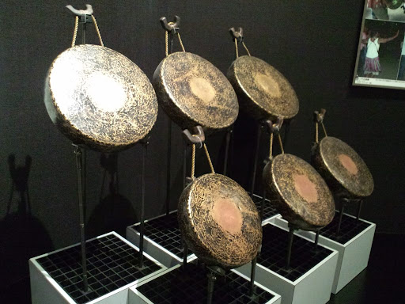
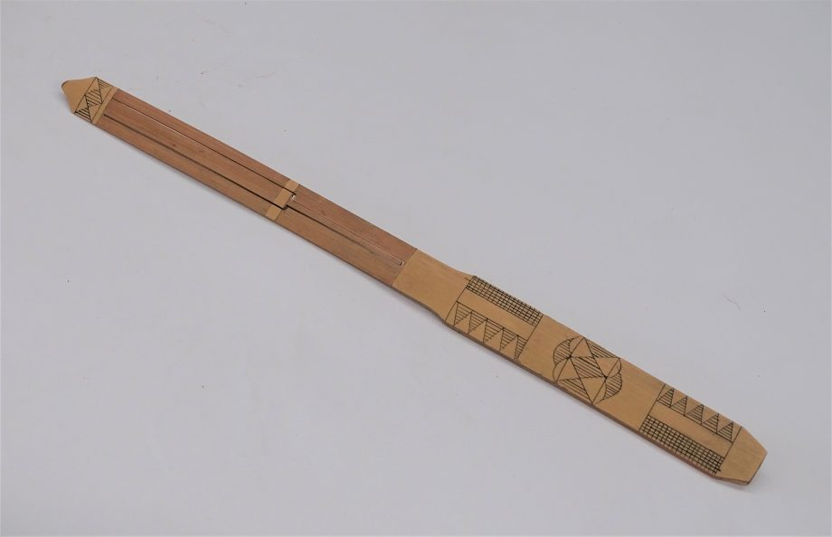
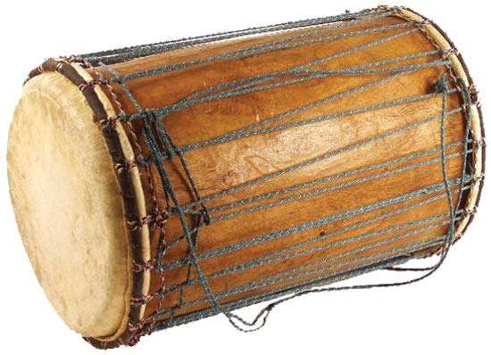
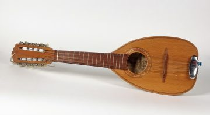
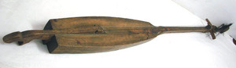
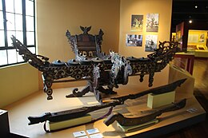

| Islands Group | Images example | Instruments |
|---|---|---|
Luzon |
 | Gangsa, a percussion instrument used in the Cordillera region for rituals, Stradition, or celebration. |
Luzon |
 | Kubing is a type of jaw harp, but is made of bamboo in the Philippines. It is considered as a intimate instrument, used as a communications between family or loved one in near-by areas. |
Visayas |
 | Tugo, a string/percussion that is similar to a guitar but it is played in different way wherein string tension is adjusted to create different pitches. |
Visayas |
 | Boktot, meaning hunchbacked in visaya because of it's perfect arched back. It's a small, four guitar-like instrument made from coconut husk. |
Mindanao |
 | Kutiyapi is a two-stringed, fretted shappred boat-lute. It is up to four-six feet long with nine fret made of hardened beeswax. |
Mindanao |
 | Kulintang is a row of small, horizontal laid gongs accompanied by larger suspended gongs and drums. It is often hear clearly and better with the use of a sticks, with soft head to hit the gongs. |